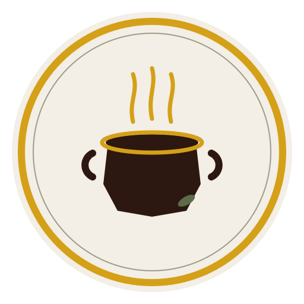
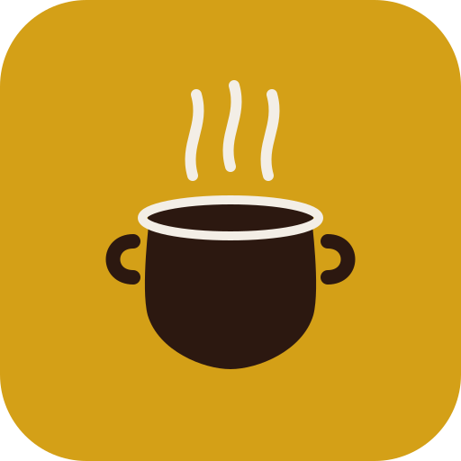

مطبخ منزلي يوصل لبابك
الألوان
دفء المطبخ المصري: إسبريسو، كركم، وزيتون — بدون ألوان صناعية.
الشعارات
قدر نحاسي وبخار = أكل بيتي طازة. استخدم النسخة المناسبة لكل سطح.
الأساسي (SVG)
منيو · يافطة · بروفايل
الأيقونة
واتساب · إنستجرامداكن
ستوري · تغليف غامقأفقي (SVG)
كيس التوصيل · هيدر · لافتاتنبرة الصوت
عامية مصرية خفيفة… زي كلام البيت.
«أهلاً بيك في أكل زمان — قولنا هتحب إيه النهاردة؟»
«طلبك بيتجهز دلوقتي وهيوصلك سخن زي البيت.»
«من مطبخنا لبيتك في 6 أكتوبر.»
التطبيقات
مزاج البراند على التغليف والصور.